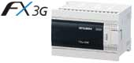

MELSEC-F series Main Unit

FX PLC Main Unit


A wide lineup in FX series offers you many choices to fit to your budget and application.
You are sure to find a model that fulfills your needs.
| FX Series Lineup | |
|---|---|
| For high speed, high functionality, and expandability  |
Memory 64,000 step RAM memory built-in. Flash memory cassette can also be mounted. Processing speed Basic instruction: 0.065 μs/instruction (LD instruction) Application instruction: 0.642 to 100 μs/instruction Device Auxiliary relay: 7,680 pts Timer: 512 pts Counter: 235 pts Data register: 8,000 pts Extension register: 32,768 pts Extension file register (optional memory): 32,768 pts Application instruction List of supported application instructions Here |
| For high speed, reduced wiring, reduced space |
Memory 64,000 step RAM memory built-in. Flash memory cassette can also be mounted. Processing speed Basic instruction: 0.065 μs/instruction (LD instruction) Application instruction: 0.642 to 100 μs/instruction Device Auxiliary relay: 7,680 pts Timer: 512 pts Counter: 235 pts Data register: 8,000 pts Extension register: 32,768 pts Extension file register (optional memory): 32,768 pts Application instruction List of supported application instructions Here |
| For communication, analog expansions, and up to 256 I/O control  To be discontinued |
Memory 32,000 step EEPROM memory built-in. Battery-free and maintenance-free. Processing speed Basic instruction: 0.21μs/instruction (in standard mode) 0.42 μs/instruction (in extension mode) Application instruction: 0.5 to 100 μs/instruction (in standard mode) 1.2 to 100 μs/instruction (in extension mode) Device Auxiliary relay: 7,680 pts Timer: 320 pts Counter: 235 pts Data register: 8,000 pts Extension register: 24,000 pts Extension file register: 24,000 pts Application instruction List of supported application instructions Here *1: 14 pt, 24 pt models can only connect 1 board |
| For reduced space and reduced wiring  To be discontinued |
Memory 32,000 step EEPROM memory built-in. Battery-free and maintenance-free. Processing speed Basic instruction: 0.21 μs/instruction (in standard mode) 0.42 μs/instruction (in extension mode) Application instruction: 0.5 to 100 μs/instruction (in standard mode) 1.2 to 100 μs/instruction (in extension mode) Device Auxiliary relay: 7,680 pts Timer: 320 pts Counter: 235 pts Data register: 8,000 pts Extension register: 24,000 pts Extension file register: 24,000 pts Application instruction List of supported application instructions Here |
| For communication, analog expansions, and low cost  |
Memory 16,000 step EEPROM memory built-in. Battery-free and maintenance-free. (Program capacity is 4,000 steps) Processing speed Basic instruction: 0.21 μs/instruction Application instruction: 0.5 to 100 μs/instruction Device Auxiliary relay: 1,536 pts Timer: 138 pts Counter: 67 pts Data register: 3,000 pts Application instruction List of supported application instructions Here |